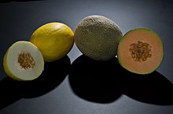

hello web rainbow is very gorgeous

Melon is any of various plants of the family Cucurbitaceae with sweet, edible, and fleshy fruit. The word "melon" can refer to either the plant or specifically to the fruit. Botanically, a melon is a kind of berry, specifically a "pepo". The word melon derives from Latin melopepo,[1][2] which is the latinization of the Greek μηλοπέπων (mēlopepōn), meaning "melon",[3] itself a compound of μῆλον (mēlon), "apple, treefruit (of any kind)"[4] and πέπων (pepōn), amongst others "a kind of gourd or melon".[5] Many different cultivars have been produced, particularly of cantaloupes.